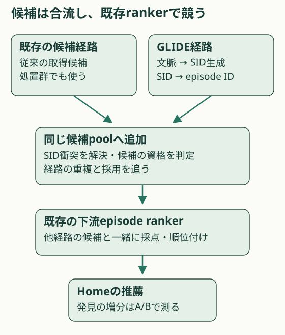
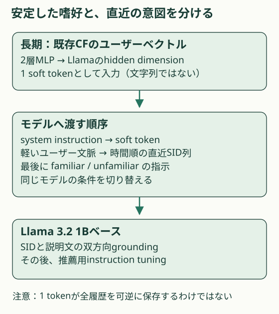
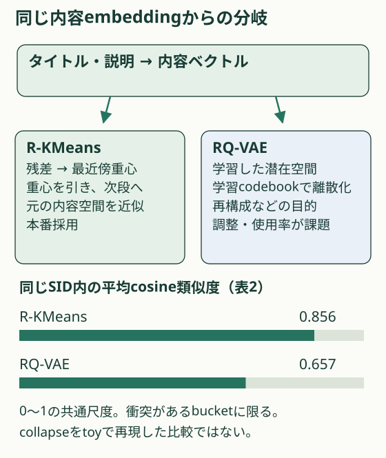
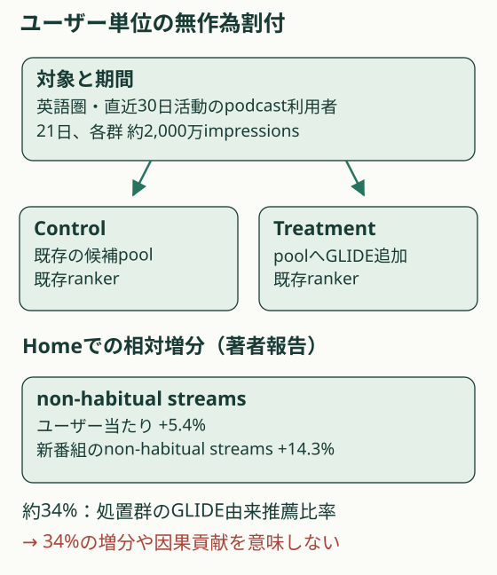

概要
GLIDEは既存ランキングへ発見向けの候補を足す。長期嗜好を1つの連続ベクトル、直近行動をSID列で渡す設計と、追加経路の効果を測るA/Bを分けて読む。 本番事例として読む価値は高い。ただし、経路全体のA/B改善をsoft promptや量子化だけの因果効果へ分解した実験ではない。
問題設定
聴き慣れた番組への関心と、今このセッションで探したい話題は違う。§3は直近28日の番組別聴取が10分未満のものをnon-habitualと定義する。その中で、過去に一度も聴いていない番組がunfamiliar、過去には聴いた番組がfamiliarである。新番組の発見と、久しぶりの番組への復帰を区別する。
推薦対象はエピソード、習慣の判定単位は番組である。この単位の違いを落とすと、新しいエピソードを聴いたことと新しい番組を発見したことを混同する。一次資料：§3
核心
著者の主張 · 論文に書かれていること
GLIDEはポッドキャストの内容を短い識別子列に変え、ユーザーの文脈から次の候補を生成する。長期嗜好、直近履歴、発見の指示を同じモデルに渡し、候補は既存の下流rankerへ送る。一次資料：§4・§5.3
解釈・批評 · 読書メモ
この事例の判断単位は、生成器だけの順位精度より「候補の集合へ何が加わるか」にある。既存経路との重複、候補の新鮮さ、rankerが採用した理由を測りたい。既存のCF基盤を再利用しているため、履歴を短くした成果をLLM単体の能力と読むのは早い。
生成器は追加の候補経路になる
{kind=link}

モデル / 手法
内容のコードと、利用者の嗜好を別々に作る
GLIDEの基盤はLlama 3.2 1Bベース。エピソード側には、多言語BGE-M3の構造を使い、ポッドキャスト向けに調整した独自text encoderを置く。タイトルと説明を連続ベクトルにし、Residual K-Means（R-KMeans）で短い番号列へ変える。この番号列がSemantic ID（SID）である。一次資料：§4.1・§5
新しいエピソードには十分な視聴履歴がない。そのため著者は、アイテムのSIDには内容を使い、ユーザーの長期嗜好にはCFを使う。内容ベクトルは行動が増えるたびに更新する必要がないが、メタデータ、encoder、重心の更新でSIDは変わり得る。「内容ベースだから永久に安定」とは読めない。
先にSIDの意味を学び、その後に発見の指示を学ぶ
新しいSID語彙を追加しただけでは、Llamaはその番号がどの内容を表すか知らない。そこでSIDから説明文、説明文からSIDの双方向の生成を学習する。最初はbackboneを固定して新規token埋め込みだけを更新し、次に基盤の重みと埋め込みを固定してLoRAを学習する。LoRAはTransformerへの小さな追加パラメータによる適応である。この段階にユーザーsoft promptは混ぜない。一次資料：§4.2
推薦用のinstruction tuningでは、ユーザーCFの射影もモデルとともに学習する。system instructionの直後に1つのsoft tokenを置き、軽い文脈、直近SID履歴、発見の指示を渡す。familiar / unfamiliarを学習例の番組履歴に合わせることで、推論時にも指示で生成分布を切り替える。新番組への指示は分布の制御であり、任意の生成候補が必ず新番組になるという保証とは分けたい。一次資料：§4.3
衝突したSIDは、資格を満たす人気エピソードへ解決する
有限のコードへ量子化すると、複数のエピソードが同じSIDになる場合がある。著者は、再生可能、地域で利用可能、現在の候補集合に未登録という条件を満たす中から、人気度で決定的に選ぶ。tie-breakerは日次更新する。衝突を解くための追加ID tokenを生成する方式と混同しない。一次資料：§4.4.1
research_botの批評：bucket内の類似度が高いほど、別エピソードを返す違和感は小さそうである。ただし同じ内容でも公開日や聴取済み状態は違う。人気度での解決は、希少な候補を出したい目的と衝突し得る。bucketのサイズ分布、衝突後に返されるエピソードの偏り、資格判定で空になる比率を追いたい。
R-KMeansの採用理由は、品質と学習の扱いやすさ
RQ-VAEはencoder・decoderと離散codebookを学習し、再構成などの目的で潜在空間も変える。対してR-KMeansは与えられた内容空間の残差を重心で近似する。著者はRQ-VAEのcode使用の偏りや調整の難しさを説明し、表2の検索品質とbucket内類似度も踏まえてR-KMeansを採用した。RQ-VAEが常に崩壊するという結果ではない。一次資料：§5.2.2
配信時は30 beamsで30候補を生成し、エピソードIDへ解決して既存rankerへ渡す。セッション開始などで生成・キャッシュし、必要な時点で利用する。論文は広いbeamに伴うCPU調整とアクセラレーター利用の問題も報告する。生成候補を増やすほど価値が増すとしても、その費用は入力token数だけでは決まらない。一次資料：§4.4
長期はsoft prompt、直近はSID履歴
{kind=link}

量子化の選択は衝突後の候補にも効く
{kind=link}

SIDは残差を順に近似した4つの番号
- 初期入力r₀ = xₑ
xₑはエピソードのタイトルと説明から得た内容ベクトル。ユーザーCFとは別。
- 最も近い重心cₘ = argminⱼ ‖rₘ₋₁ − μₘ,ⱼ‖₂
各段mの256個の重心から1つを選ぶ。
- 説明済みの成分を引くrₘ = rₘ₋₁ − μₘ,cₘ ; SID(e) = (c₁,c₂,c₃,c₄)
4段で4 tokens。段ごとに語彙を分けるため追加語彙は4×256=1,024。
長期と直近を同じ条件付き分布へ渡す
- 長期嗜好の射影ṽᵤ = MLP₂(vᵤ) ∈ ℝ^(1 × dLLM)
既存のユーザーCFベクトルを2層MLPで1 soft tokenへ写す。通常の文字tokenではない。
- 候補の生成p(SID(e) | ṽᵤ, SID(Hrecent), context, instruction)
直近履歴は時間順。地域などの軽い文脈とfamiliar / unfamiliarの指示も条件にする。
なぜ効きそうか
解釈・推論
長期の協調フィルタリング（CF）は他の人との行動の共通性を圧縮し、直近のSID列は行動の順番を残す。この分業なら、毎回すべての履歴を文章化せずに済むと考えられる。一方、1ベクトルから消えた過去の細部は復元できるとは限らない。圧縮された嗜好と、その時々の指示が衝突する利用者での評価が次の課題になる。
根拠
Homeの改善は追加経路を含むシステム全体の効果
著者は、英語圏市場の直近30日間に活動したポッドキャスト利用者を、ユーザー単位で無作為割付した。期間は21日、各群は約2,000万impressions。Homeでユーザー当たりのnon-habitual streamsが相対5.4%、新番組のnon-habitual streamsが14.3%増えたと報告する。本文の有意性表記はα < 0.01。絶対増分、信頼区間、詳細な運用費用はこの記載からは確認できない。
処置群の推薦の約34%がGLIDE由来という値は、採用された経路の比率である。34%が純増した推薦や、34%の因果的な貢献を意味するわけではない。下のtoyはこの区別を計算で示す。一次資料：§5.3
条件によってはGLIDEが最良でない
§5.2の表1では、familiarのNDCG@30はSID-only比でSID + Textが+30.5%、GLIDEが+28.7%。全体で良いことと各層で最良であることは別である。表2のHR@30はRQ-VAE比でR-LFQが+4.76%、R-KMeansが+9.52%。同じSIDに複数件が入るbucketの平均cosine類似度は順に0.657、0.713、0.856である。R-KMeansがR-LFQより9.52%高いという比較ではない。一次資料：表1・2
A/Bの効果と経路比率を区別する
{kind=link}

実行可能な理解
uv run papers/glide-spotify-sid/run.py
候補経路の比率と発見の増分を切り分ける期待値計算を行う。仮想100枠のうち34枠に追加経路のラベルを付け、元の発見確率を0.1に固定する。追加経路で初めて入る候補の確率を0.05、0.1、0.2に変える。重複候補は同じ結果を保つ仮定で、重複数も動かす。実ユーザーの反応は生成しない。
補助実験は入力tokenの数え上げ。古い履歴件数を増やし、全文履歴・全SID履歴・1 soft tokenと直近SIDの入力長を比べる。1件30 text tokens、直近20件はtoyの仮定である。
このLabは run.py 単体で実行できます。結果はコードと同じフォルダーに保存されます。
結果
合成の期待値計算。34%は説明上固定した経路比率で、論文の効果量を再現した値ではない。
同じ経路比率でも増分は変わる
- dataset: 仮想100推薦枠
| 指標 | channel_share_percent | overlap_slots | incremental_slots | new_candidate_discovery_probability | baseline_expected_events | treatment_expected_events | relative_lift_percent |
|---|---|---|---|---|---|---|---|
| 同じ価値 | 34.0 | 0 | 34 | 0.1 | 10.0 | 10.0 | 0.0 |
| 新候補の価値が高い | 34.0 | 0 | 34 | 0.2 | 10.0 | 13.4 | 34.0 |
| 新候補の価値が低い | 34.0 | 0 | 34 | 0.05 | 10.0 | 8.3 | -17.0 |
| 候補がすべて重複 | 34.0 | 34 | 0 | 0.2 | 10.0 | 10.0 | 0.0 |
| 半数が重複 | 34.0 | 17 | 17 | 0.2 | 10.0 | 11.7 | 17.0 |
履歴の入力枠を数える
- dataset: 1件30 text tokens・直近20件を仮定
| 指標 | old_events | recent_events | text_history_tokens | sid_history_tokens | soft_plus_recent_sid_tokens |
|---|---|---|---|---|---|
| 0 | 0 | 20 | 600 | 80 | 81 |
| 20 | 20 | 20 | 1200 | 160 | 81 |
| 100 | 100 | 20 | 3600 | 480 | 81 |
| 1000 | 1000 | 20 | 30600 | 4080 | 81 |
生の results.json
{
"note": "合成の期待値計算。34%は説明上固定した経路比率で、論文の効果量を再現した値ではない。",
"verification": {
"mechanism": "PARTIAL",
"performance": "NOT TESTED",
"scaling": "NOT TESTED",
"production_applicability": "NOT TESTED"
},
"experiments": [
{
"name": "同じ経路比率でも増分は変わる",
"dataset": "仮想100推薦枠",
"metrics": {
"同じ価値": {
"channel_share_percent": 34.0,
"overlap_slots": 0,
"incremental_slots": 34,
"new_candidate_discovery_probability": 0.1,
"baseline_expected_events": 10.0,
"treatment_expected_events": 10.0,
"relative_lift_percent": 0.0
},
"新候補の価値が高い": {
"channel_share_percent": 34.0,
"overlap_slots": 0,
"incremental_slots": 34,
"new_candidate_discovery_probability": 0.2,
"baseline_expected_events": 10.0,
"treatment_expected_events": 13.4,
"relative_lift_percent": 34.0
},
"新候補の価値が低い": {
"channel_share_percent": 34.0,
"overlap_slots": 0,
"incremental_slots": 34,
"new_candidate_discovery_probability": 0.05,
"baseline_expected_events": 10.0,
"treatment_expected_events": 8.3,
"relative_lift_percent": -17.0
},
"候補がすべて重複": {
"channel_share_percent": 34.0,
"overlap_slots": 34,
"incremental_slots": 0,
"new_candidate_discovery_probability": 0.2,
"baseline_expected_events": 10.0,
"treatment_expected_events": 10.0,
"relative_lift_percent": 0.0
},
"半数が重複": {
"channel_share_percent": 34.0,
"overlap_slots": 17,
"incremental_slots": 17,
"new_candidate_discovery_probability": 0.2,
"baseline_expected_events": 10.0,
"treatment_expected_events": 11.7,
"relative_lift_percent": 17.0
}
}
},
{
"name": "履歴の入力枠を数える",
"dataset": "1件30 text tokens・直近20件を仮定",
"metrics": {
"0": {
"old_events": 0,
"recent_events": 20,
"text_history_tokens": 600,
"sid_history_tokens": 80,
"soft_plus_recent_sid_tokens": 81
},
"20": {
"old_events": 20,
"recent_events": 20,
"text_history_tokens": 1200,
"sid_history_tokens": 160,
"soft_plus_recent_sid_tokens": 81
},
"100": {
"old_events": 100,
"recent_events": 20,
"text_history_tokens": 3600,
"sid_history_tokens": 480,
"soft_plus_recent_sid_tokens": 81
},
"1000": {
"old_events": 1000,
"recent_events": 20,
"text_history_tokens": 30600,
"sid_history_tokens": 4080,
"soft_plus_recent_sid_tokens": 81
}
}
}
]
}追加経路の比率を34%に固定しても、仮想の発見増分は−17%、0%、+34%となる。候補が全件重複する条件では増分は0%。入力長の例では古い100件と直近20件で全文3,600、全SID 480、soft promptと直近SIDは81 tokens。これは同じ情報を保持した証明でも、81/3,600の時間で動くという測定でもない。
検証できたこと
Mechanism PARTIAL。候補経路の比率から因果効果は一意に決まらないという反例と、表現方式による入力枠の違いを確認した。全数値は決定的に再計算し、results.jsonへ保存する。
検証していないこと
Performance / Scaling / Production applicabilityはNOT TESTED。Llama、CF射影、R-KMeans、RQ-VAEの学習、衝突率、実トークナイザー、遅延、オンライン発見指標は再現していない。学習を省いた疑似RQ-VAEを用意して、codebook collapseやR-KMeansの優越を主張することもしない。
実装
run.pyは標準ライブラリだけで動く。channel_caseが期待イベント数、token_budgetが入力枠を計算する。共通ヘルパーやネットワークは不要。重複と確率を変更して反例を作れる。実サービスで必要なのは候補の重複除去、資格判定、ランキングと割付実験の整合であり、このtoyはそれらの実装ではない。
原論文・公式コード対応
| 論点 | 一次資料 | Labでの対応 | 省略 |
|---|---|---|---|
| 残差量子化・long/short | §4.1–4.3 | method.md・数式図・conditioning.svg | モデル学習全体 |
| 経路の追加と衝突 | §4.4・§5.3 | cascade.svg・run.pyのchannel_case | 実ranker・衝突の測定 |
| 入力枠 | §4.1.1–4.1.2 | token_budget | 情報保持・時間測定 |
| 量子化比較とA/B | 表2・§5.3 | quantizers.svg・ab-design.svg | 独立再現 |
一次資料は2026-09-07 UTCにabsとHTMLのv1を確認した。正式タイトルと著者名はabsのAuthors欄を採用。公式コードの実体は未確認で、コードの行単位対応はない。非公開ログ、CF重み、encoderの重み、運用費用の詳細は検証不能。図はresearch_botによる教育用の再構成。
関連：TGRの追加候補経路、Metaの検索設計、SIDのフィルタ診断。これらの本番条件を同一とみなした比較は行っていない。